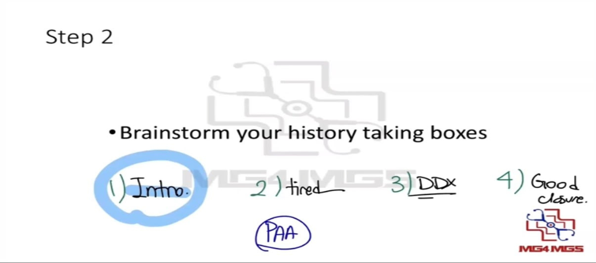
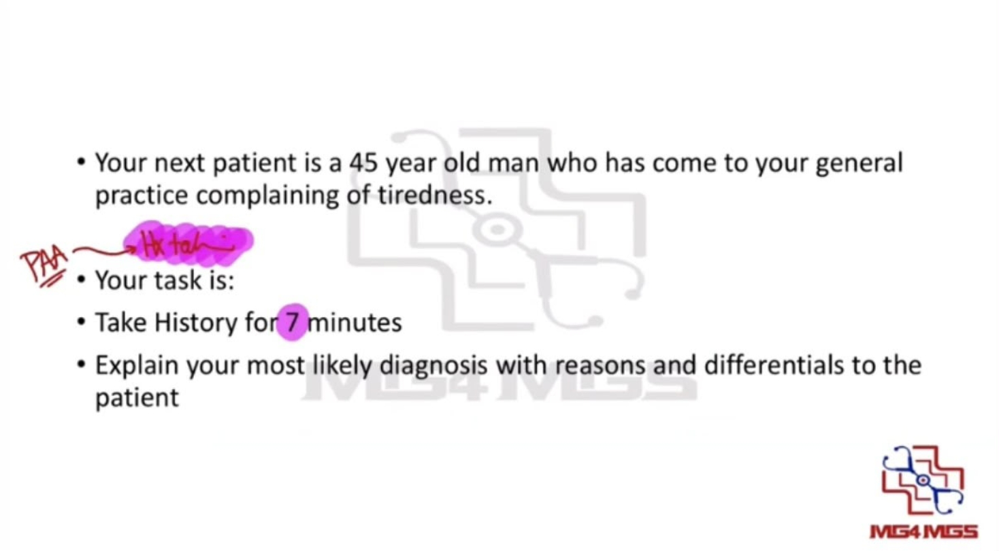

Tiredness — Lymphoma
Source: Dr. Amir workshop — Med workshop 2 - 2026 / CLASS 4 TIREDNESS (Aug 2026 drop) · Specialty: general_practice
Stem 1 — History Taking (45-year-old man with tiredness)
Task: take a history for 7 minutes, then explain the most likely diagnosis with reasons and differentials to the patient.
Approach: brainstorm the differentials and the history boxes first. ID check, hand hygiene.
Open-ended question: introduce yourself, then explore the tiredness. The patient reports being excessively tired for a few months, so bad he can barely get out of bed, and is worried something is wrong. Empathise and explain you will ask questions and make a management plan together.
Characterise tiredness: what he means (no energy at all), onset (6–7 months ago), pattern (every day), progression (worse over the last month), alleviating/aggravating factors (nothing helps, getting worse), effect on life (days unable to get out of bed, sick leave, employer unhappy, problems at home).
Stem 1 — Differential Screening
- Hepatic: jaundice, dark urine, pale stool, skin tanning, family history of liver disease/haemochromatosis (all no).
- Endocrine: temperature intolerance, bowel change, thirst, polyuria (all no).
- Malignancy (positive): unintentional weight loss — yes, about 6 kg in 2–3 months (or ‘clothes getting loose’); appetite change; lumps and bumps — yes, two painless lumps in the armpit; night sweats; family history of cancer.
- Infection: fever/chills, rashes, recent travel, sore throat/flu-like symptoms (no); sexually active, practises safe sex.
- Anaemia: exertional SOB, palpitations (no). Autoimmune: joint pain, shoulder/hip pain (no).
- Drugs/Depression: drugs, medications, alcohol; mood fine; work and home situation fine.
- Cardiopulmonary: chest pain, leg swelling, cough (no). Coeliac: diarrhoea, blood/greasy stool (no). OSA: snoring/gasping (no). Occupation.
Good closure: smoking, alcohol, allergies, past medical history, family history of cancer/medical conditions; explore concerns.
Stem 1 — Diagnosis and Differentials
Diagnosis: concern for lymphoma (a cancer of the lymph nodes) — reasons: tiredness, two large axillary lumps, and weight loss.
Differentials: other cancers (leukaemia); liver conditions (hepatitis, haemochromatosis); endocrine (diabetes, hypothyroidism); infections (HIV, TB, EBV); anaemia; autoimmune (RA, IBD); drugs/medication; depression; coeliac disease/heart failure/COPD; OSA; and occupational (night-shift) causes.
Stem 2 — PEFE and Investigations (40-year-old woman: tiredness, 5 kg weight loss over 3 months, night sweats, loss of appetite)
Task: ask physical examination from examiner (findings only given if requested specifically), explain diagnosis and differentials, and request further investigations.
PEFE: General appearance — no cachexia, no rashes, no pallor/jaundice. Vital signs (examiner gives). Hands — no clubbing; scratch marks present; purpuric rashes checked. Face — gum hypertrophy/bleeding. Full lymph node examination (epitrochlear, axillary, cervical, inguinal chains) — two large axillary nodes, 30 mm each, hard, fixed, non-tender. Breast examination and a skin check of the arms for suspicious lesions. Thyroid — normal. Bone tenderness. Respiratory, CVS. Abdomen — check for masses, splenomegaly, hepatomegaly (large spleen found). Office tests — BSL 6 mmol/L, urine dipstick.
Stem 2 — Diagnosis, Differentials and Investigations
Diagnosis: lymphoma — reasons: tiredness, weight loss, reduced appetite, night sweats, and hard, fixed, non-tender lumps in the neck/axilla; enlarged spleen and scratch marks (pruritus) add further support.
Differentials: other cancers including skin cancer (skin normal on examination); infections (EBV — no rash/flu symptoms; HIV — safe sex); anaemia; hepatitis; haemochromatosis.
Investigations: imaging of the enlarged node (ultrasound) and biopsy; FBE and blood film (to exclude leukaemia) plus LFT and EUC; further staging scans (CT, PET) at later stages; HIV and syphilis serology, ESR, CRP.
Case Figures







🔬 Expert Review & Enhancements
Reviewed by: history-taking-expert (Australian clinical supervisor) · fact-checked against the irStudy medical textbook RAG index.
✏️ Corrections
FNAC is generally inadequate to diagnose lymphoma because it does not preserve nodal architecture. The Australian standard for a suspected lymphomatous node (hard, fixed, painless) is an excisional (or at least core) lymph node biopsy for histology, immunophenotyping and flow cytometry. State excisional biopsy as the definitive investigation.
Frame drenching night sweats, unexplained fever >38°C and >10% weight loss as lymphoma B symptoms (prognostically important for staging), and add serum LDH (and uric acid) to the baseline bloods, as LDH is a standard lymphoma marker used in Australian practice.
⭐ Suggested Enhancements
🏷️ Metadata
📚 Reference Citations (RAG)
John Murtagh General Practice, 8th Edition.pdf p.1809 qdrant:1e799373-8465-4dc1-b820-29f72901a97f
John Murtagh General Practice, 8th Edition.pdf p.227 qdrant:793049e3-8954-4049-8d14-4da724f2d6ab
John Murtagh General Practice, 8th Edition.pdf p.959 qdrant:c46b1a85-1567-4087-ab56-e69c2f73e35b